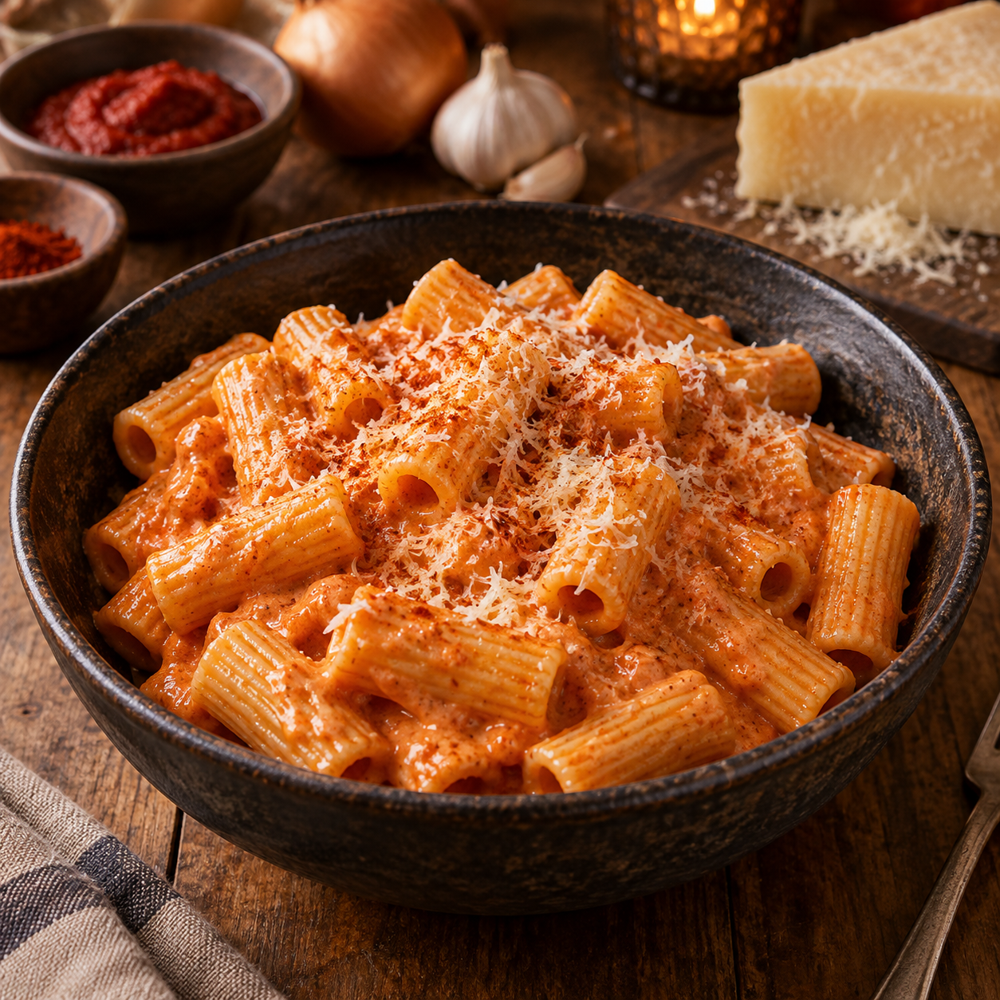

Unsere Klassiker · Pasta
Meine Pasta

Eine unkomplizierte, wunderbar cremige Pasta mit angeröstetem Tomatenmark und Parmesan. Eine kleine Prise geräuchertes Paprikapulver gibt der Sauce ihren besonderen Geschmack.
Zutaten
400 gRigatoni oder Tagliatelle
1 großeZwiebel
2Knoblauchzehen
2 ELOlivenöl
2–3 ELTomatenmark
300 mlSchlagsahne
Etwa 100 mlNudelwasser
60–80 gParmesan, frisch gerieben
1 TLPaprikapulver, geräuchert
EtwasPfeffer
Nach BedarfSalz
Zubereitung
- Die Pasta in reichlich Salzwasser al dente kochen. Vor dem Abgießen etwa 100 ml Nudelwasser auffangen.
- Die Zwiebel fein würfeln. Das Olivenöl in einer großen Pfanne erhitzen und die Zwiebel darin bei mittlerer Hitze goldgelb anschwitzen.
- Den Knoblauch fein hacken, zur Zwiebel geben und nur kurz mitbraten. Das Tomatenmark hinzufügen und gründlich anrösten, bis es dunkler wird und aromatisch duftet.
- Mit der Sahne aufgießen. Parmesan, Pfeffer und geräuchertes Paprikapulver einrühren und die Sauce einige Minuten sanft köcheln lassen.
- So viel Nudelwasser einrühren, bis die Sauce schön cremig ist. Jetzt die Sauce abschmecken und bei Bedarf nachsalzen.
- Erst danach die Pasta in die fertig abgeschmeckte Sauce geben und gründlich unterheben. Kurz ziehen lassen und direkt servieren.
Mein Geheimtipp
Das geräucherte Paprikapulver gibt der cremigen Sauce eine feine rauchige Tiefe. Lieber zunächst sparsam verwenden und nach dem Probieren noch etwas ergänzen.